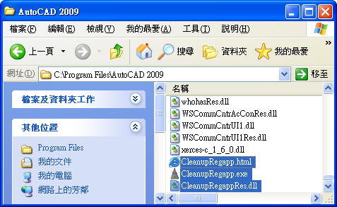
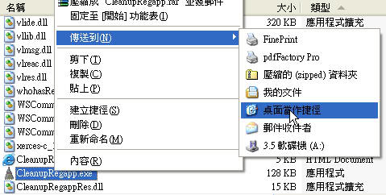
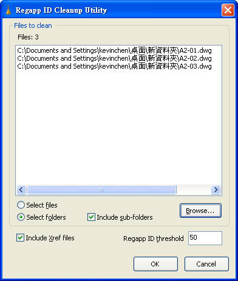
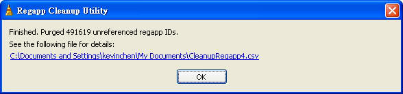
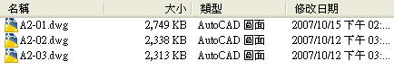
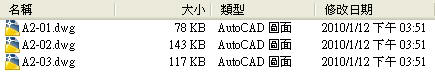

AutoCAD發展了20幾個版本，而產生DWG格式的軟體也有很多，所以因為版本及軟體交錯使用，使得DWG圖形檔中常常會內含一些錯誤訊息， 過多註冊程式 就是典型問題的其中一種，通常在高階版本原廠都會提供解決方案，而舊的版本也是可以解決 過多的註冊程式問題，像這類的圖面有可能隱藏錯誤訊息而導致圖面損毀，或者在檔案使用中連結了太多的 註冊程式 才會使檔案異常的放大，一般可使用 -PURGE 指令行 方式 選用 註冊程式(R)後，即可刪除過多的註冊程式。
這個註冊程式問題跟上一個介紹的主題 清除比例清單CleanupScales 一樣，原廠也有釋出免費修復程式(CleanupRegapp.exe)，此程式適用於 AutoCAD 2008 及 AutoCAD 2009 二個版本，建議你趕快處理 註冊程式造成檔案異常放大問題，才不會惡性循環造成所有檔案都會異常變大，進而造成開圖(改圖)時產生lag情況。
1.根據您的操作系統（32位或64位），下載適合的自解壓縮可執行文件。
2.將解壓縮到文件 CleanupRegapp.exe，CleanupRegappRes.dll，CleanupRegapp.html 複製後，再貼到您的 AutoCAD 安裝目錄。

3.建立 CleanupRegapp.exe 捷徑(建議放到您的桌面)。

4.請記得更名方便日後辨識及使用。
>>>
注意：此程式適用於 AutoCAD 2008 及 AutoCAD 2009 二個版本。
1.可以選擇資料夾或圖檔二個方式，選用的資料夾中所有圖檔的 註冊程式(R) 會全部清除。

2.清除完畢後會出現以下訊息。

△未處理的檔案大小

△已處理的檔案大小

範例檔中：刪除了163880 個已註冊的應用程式，DWG圖檔由原先的 2749kb 刪除註冊程式後檔案縮小為 78kb。
有興趣的朋友可以使用您的圖檔來測試，也可以下載我所提供的範例檔，單一圖檔可以先使用 指令行 來操作，當您有大量的圖檔則可以使用原廠提供的程式來清除註冊程式。
範例檔：
*單一圖檔 指令行 操作步驟：
代碼:
指令: -PURGE
請輸入要清除的未使用物件的類型
[圖塊(B)/標註型式(D)/圖層(LA)/線型(LT)/材料(MA)/出圖型式(P)/形狀(SH)/文字型式(ST)/複線型式(M)/表格型式(T)/視覺型式
(V)/註冊程式(R)/全部(A)]: R
輸入要清除的名稱 <*>: N
確認每一個要清除的名稱？[是(Y)/否(N)] <Y>:
正在刪除已註冊的應用程式「DIAM\M+00000?IRE」。
.
.
正在刪除已註冊的應用程式「MATI\M+00000?E」。
正在刪除已註冊的應用程式「DIAM\M+00000甬RE」。
163880 個已註冊的應用程式被刪除。
-PURGE指令補充：
-PURGE指令 所清除的 註冊程式(R) 就是指 ObjectARX 應用程式，當開啟包含自訂物件的圖面時，會應要求載入來源應用程式。而如果找不到就會問你是否 顯示代理圖形。
AutoCAD 2008 的 多重引線 新功能就是 ObjectARX 應用程式，當使用 AutoCAD 2006 開啟含有 多重引線 的圖面時，會有以下 3 種情況，預設值為 顯示代理圖形。